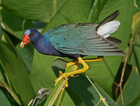
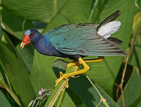

| American Purple Gallinule | |
|---|---|
|  | |
| Conservation status | |
| Binomial name | |
| Porphyrio martinica Linnaeus, 1766 |
| American Purple Gallinule | |
|---|---|
|  | |
| Conservation status | |
| Binomial name | |
| Porphyrio martinica Linnaeus, 1766 |
The American Purple Gallinule (Porphyrio martinica) is a "swamp hen" in the rail family Rallidae.
This medium-sized rail is unmistakable, with its huge yellow feet, purple-blue plumage with a green back, and red and yellow bill. It has a pale blue forehead shield and white undertail.
Young birds are brown rather than purple. These gallinules will fly short distances with dangling legs.
Their breeding habitat is warm swamps and marshes in southeastern states of the United States and the tropical regions of Central America, the Caribbean and northern South America. This species is resident in southern Florida and the tropics, but most American birds are migratory, wintering south to Argentina.
The nest is a floating structure in a marsh. Five to ten eggs are laid. Their coloration is buff with brown spots.
The diet of these rails is omnivorous, being known to include a wide variety of plant and animal matter, including seeds, leaves and fruits of both aquatic and terrestrial plants, as well as insects, frogs, snails, spiders, earthworms and fish. They have also been known to eat the eggs and young of other birds.
This species is a very rare vagrant to western Europe. There is a similar species in southern Europe, the Purple Swamphen, Porphyrio porphyrio, but that bird is much larger.

{kind=link}